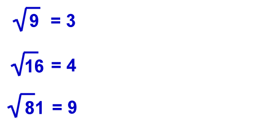
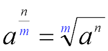
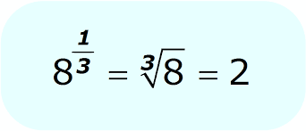
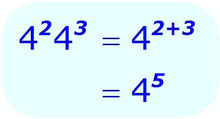

Negatives
If an exponent is negative it is equivalent to 1 over the base to that positive exponent.
a-b = 1 / ab
Example:
5-2
1 / 52
1 / 25
Square Root
Finds the number where that number times itself multiplies into the original number whos root was being searched for.
y2 = x, and √x = y
Example:
Fractional
Used to find a specific root where the numerator is the exponent of the base inside the root, and the denominator is the root

Example:
Multiply, Divide - Solving powers with operators
Multiply
When a base is being multiplied by a base of the same value, the exponents are summed together and the base stays the same.
ab × ac = ab + c
Example:
Multiply
When a base is being divided by a base of the same value, the first exponent is subtracted by the dividing value and the base stays the same.
ab ÷ ac = ab - c